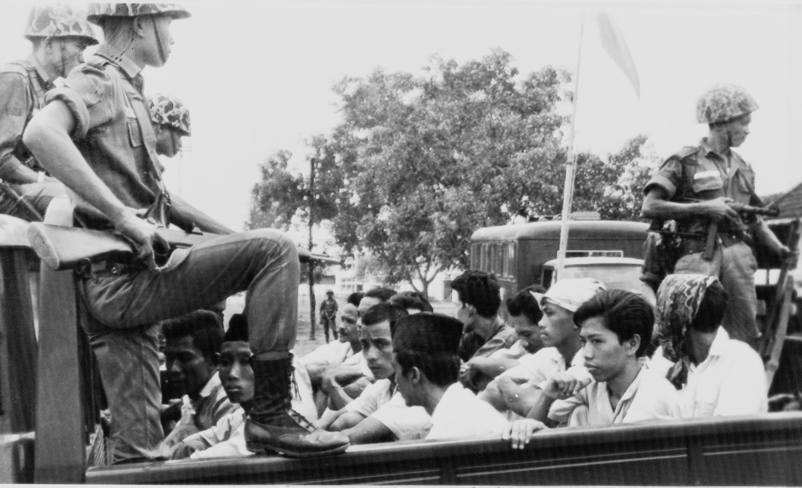
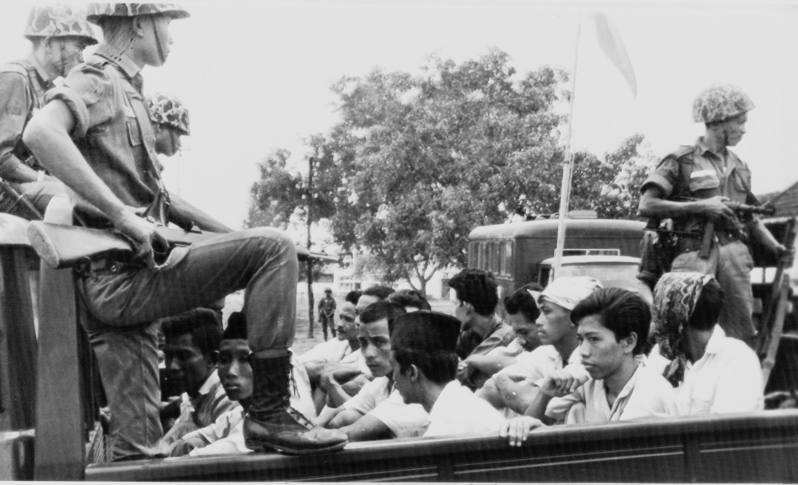
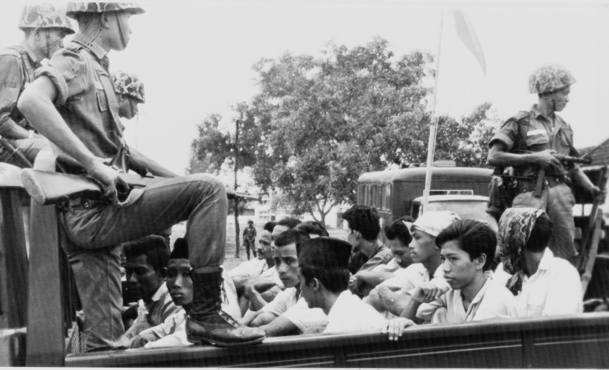
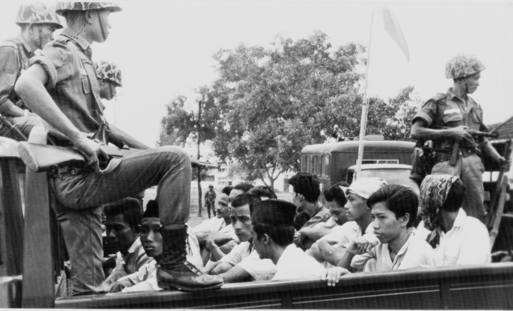

On September 30, 1965, the kidnapping and murder of six high ranking generals was orchestrated by Major General Suharto and the Indonesian military. They framed the killings on the PKI, or the Communist Party of Indonesia, who was backed by President Sukarno. Sukarno was stripped of his presidency due to his failure to control the coup, and in 1966 authority was officially transferred (likely under coercion)to Suharto. Sukarno was placed under house arrest until his death in 1970.

During Suharto's reign of 32 years, a range of 500,000 to over 1,000,000 people were murdered. All areas in Indonesia faced the purge of supposed members of the PKI, leftists, and minorities including ethnic Chinese Indoneisans. In 1975, under Suharto's rule, Indonesia invaded and occupied East Timor, leading to the deaths of an estimated 100,000-200,000 Timorese through violence and starvation (out of 700,000 total).

For decades, the topic of the Indonesian massacre was justified and state-censored under the Suharto regime, and until now no judicial resolution has been given to the victims, as it is still a politically sensitive topic. The East Timor genocide which resulted from Suharto's rule is also continually denied and argued as an action of "anticolonial unity."

Perhaps unsurprisingly, the Indonesian massacre and its subsequent fallout was heavily supported by the United States, who supplied the military with kill lists of suspected PKI members, propaganda, and communication systems, as has recently been discovered in CIA declassified documents. This was done ultimately for the goal of backing Suharto's consolidation of power, eradicating Communist forces, and promoting pro-Western ideals. The ruinous effect it had has still not been acknowledged.